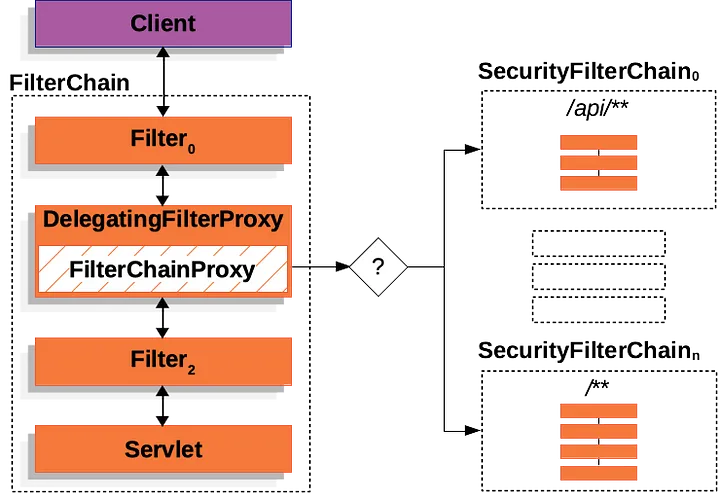
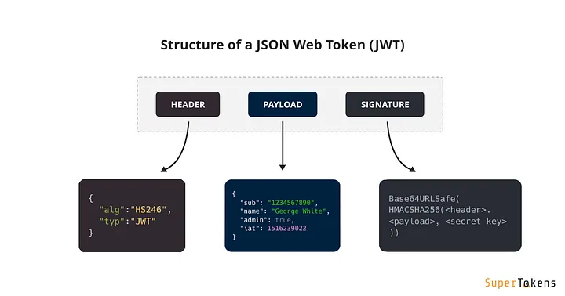
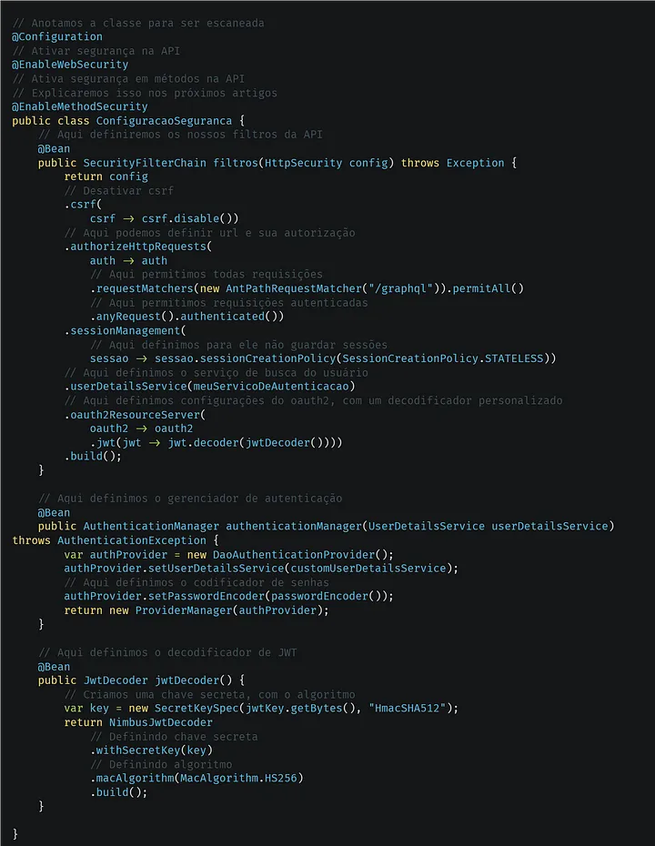
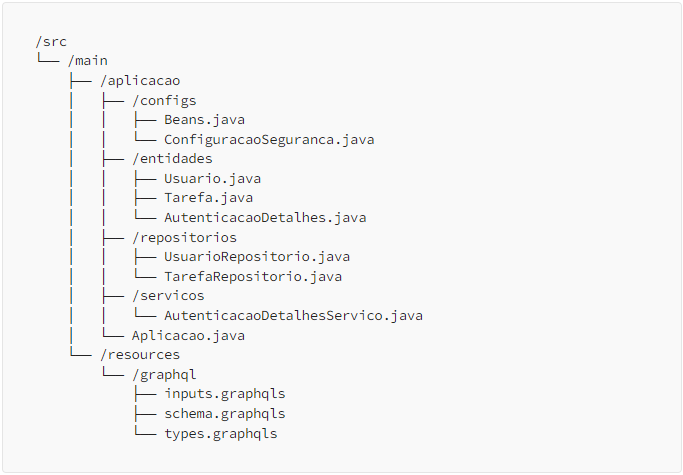

Criando uma API GraphQL com Java Spring Boot — Parte 4: Spring Security e JWT
Neste artigo iremos configurar o sistema de autenticação e autorização da nossa API, usando o Spring Security.
Spring Security Logo.
Como funciona o Spring Security?
O Spring Security é a primeira camada de toda requisição em uma API, exceto caso a desative. Para proteger o nosso servidor e API, o Spring Security possui uma série de filtros com o propósito de analisar a requisição, esses filtros interceptam a requisição e depois define qual ação tomar, em caso de sucesso, o usuário pode requisitar algo protegido por trás de uma camada de autenticação e autorização, o exemplo abaixo ilustra a arquitetura do Spring Security.

Exemplo da arquitetura do Spring Security.
Autenticação e Autorização
Apesar de parecerem iguais ou similares, elas possuem funções totalmente diferentes. Autenticação é responsável por identificar o usuário, imagine que tenhamos uma empresa, para entrar nessa empresa devemos apresentar um crachá ao segurança, em caso de não termos o crachá seremos barrados de entrar na empresa. Já no caso da Autorização, ela é responsável por limitar as ações de um usuário, agora voltando ao exemplo em que apresentamos o crachá, mesmo com o crachá não podemos entrar em todas as áreas da empresa, algumas áreas só podem ser acessadas por membros específicos, como por exemplo a Staff, ou Administradores.
Json Web Tokens
Json Web Tokens ou JWT (jot), são tokens para usados para identificar o usuário da requisição, além dele temos autenticação usando OAuth e SSO. JWTs permitem guardar informações similares á um objeto em Json, dentro deles podemos definir chaves ou campos, e passar valores relativo ao mesmo. JWTs possuem campos nativos que não podem ser redeclarados, como tempo de expiração, tempo de emissão, emissor, tipo de algoritmo, e etc. Além disso o token é codificado com uma chave secreta, que pode ser usada para decodifica-lo.

Exemplo de estrutura de um JWT.
Como configurar o Spring Security?
Abaixo haverá uma exemplificação da configuração do Spring Security, em uma API com uso do JWT, lembrando que devemos anotar nossa classe para que ela seja adicionada ao contexto do Spring.

Exemplo de configuração do Spring Security.
Configurando a segurança da API
Vamos criar alguns arquivos para se comunicar com a base de dados, e obter as informações de autenticação.
Exemplo de configuração da autenticação do usuário.Exemplo de configuração da autenticação do usuário.
Agora iremos configurar nossos filtros e demais recursos do Spring Security, mas antes disso precisamos organizar nossos arquivos, aqui vai um exemplo de como eu organizaria.

Exemplo de configuração do Spring Security com JWT.
E chegamos ao fim do artigo, abaixo deixarei links relacionados sobre o tema.